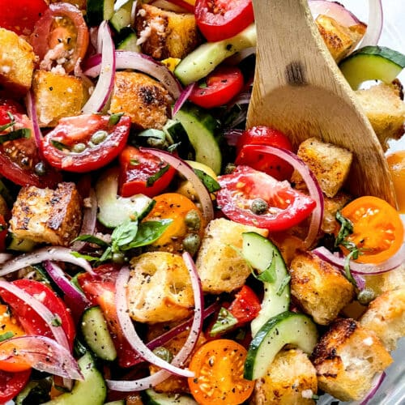

Panzanella Salad

Description
Panzanella salad is a rustic Italian delight that transforms simple ingredients into a feast of textures and flavors. Juicy, sun-ripened tomatoes, crisp cucumbers, and fragrant basil are tossed with chunks of golden, olive oil-soaked bread. The bread absorbs the tangy vinaigrette, creating a satisfying bite that's hearty yet refreshing.
Each forkful bursts with vibrant Mediterranean essence, where the sweetness of tomatoes contrasts with the briny depth of capers or olives. The bread's crunch mingles with the fresh vegetables, while a drizzle of olive oil and vinegar ties everything together. Panzanella is summer on a plate—simple, bright, and utterly delicious.
Ingredients
- 6 cups day old Italian bread, torn into bite-size pieces
- ⅓ cup olive oil
- salt and pepper to taste
- 3 cloves garlic, minced
- ¼ cup olive oil
- 2 tablespoons balsamic vinegar
- 4 medium ripe tomatoes, cut into wedges
- ¾ cup sliced red onion
- 10 basil leaves, shredded
- ½ cup pitted and halved green olives
- 1 cup fresh mozzarella, cut into bite-size pieces
Steps
- Preheat the oven to 400 degrees F (200 degrees C).
- Toss bread with 1/3 cup olive oil, salt, pepper, and garlic in a large bowl; arrange on a baking sheet and toast in the preheated oven until golden, about 5 to 10 minutes. Transfer bread back into the bowl and set aside to cool slightly.
- Whisk 1/4 cup of olive oil and balsamic vinegar together in a small bowl; set aside.
- Add tomatoes, onion, basil, olives, and mozzarella cheese into the bowl with bread; toss with vinaigrette and let stand for 20 minutes before serving.
Ottimo!
Home